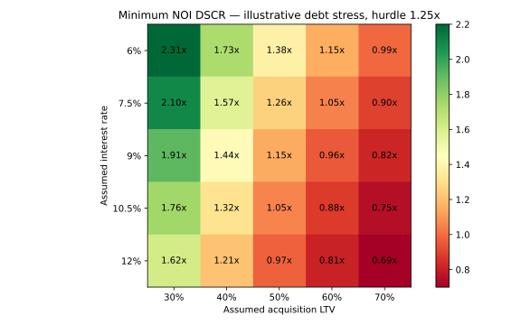

Research dashboard · 24 October 2026 · 35 tests
Bengaluru Investment & Asset Management
Acquisition underwriting → monthly leases → debt coverage → operating review
Decision and evidence
Consolidates the Bengaluru acquisition model, property operating review and financing stress. The monthly cohort model connects lease expiry and renewal assumptions to amortising debt and trailing coverage.
Finding. The synthetic 36-month lease case reaches 74% expected occupancy and 1.13× minimum trailing DSCR. The separate acquisition case still rejects the assumed INR100 crore entry price.
Research views



Model mechanics
Monthly expected rent sums occupied cohort area × rent. Renewal and reletting branches carry separate capex timing. Debt interest uses opening balance × annual rate / 12; trailing DSCR is 12-month NOI divided by 12-month debt service. Acquisition valuation remains a separately parameterised teaching case.
From basic input reconciliation to stress analysis, each step has an auditable calculation trail in the repository.
Boundaries
Synthetic leases and underwriting assumptions; no actual rent roll, lender agreement or technical inspection. Expected renewal cash flow is not a calibrated probability forecast. Native Excel verification remains pending.
Offline research software, not a production trading or asset-management system.
Data and reproducibility
Synthetic inputs in lease_engine.py and assumptions.json; source URLs and access dates in the result JSON. Public-filings case available in embassy_case/.
- Monthly lease cash flows (CSV)
- Credit scenarios (CSV)
- Acquisition cash flows (CSV)
- Property operating dashboard
- Embassy memo and Excel model
lease_summary.json — exact results and assumptions
{
"source": "Synthetic lease cohorts specified in lease_engine.py",
"source_url": "https://github.com/Anjaney336/bengaluru-real-estate-investment-lab/blob/main/lease_engine.py",
"access_date": "2026-10-24",
"assumptions": [
{
"name": "A",
"area": 40000,
"rent": 92,
"expiry": 12,
"renewal_probability": 0.75,
"downtime": 6,
"renewal_rent": 98,
"ti_psf": 500,
"escalation": 0.05
},
{
"name": "B",
"area": 30000,
"rent": 88,
"expiry": 24,
"renewal_probability": 0.6,
"downtime": 9,
"renewal_rent": 95,
"ti_psf": 500,
"escalation": 0.05
},
{
"name": "C",
"area": 20000,
"rent": 90,
"expiry": 30,
"renewal_probability": 0.8,
"downtime": 3,
"renewal_rent": 96,
"ti_psf": 500,
"escalation": 0.05
}
],
"minimum_expected_occupancy": 0.74,
"total_leasing_capex": 45000000.0,
"months": 36,
"limitation": "Probability-weighted expected rent, not simulated tenant outcomes. Reletting after downtime assumed certain. No lease renewal correlation, credit loss, rent-free incentives or tax.",
"minimum_trailing_12m_dscr": 1.13140194080883,
"closing_debt": 490185917.5477305,
"financing_assumptions": {
"principal": 550000000,
"annual_rate": 0.09,
"amortization_months": 180
}
}committee_summary.json — exact results and assumptions
{
"case": "Synthetic Bengaluru office; not an actual deal",
"base_equity_npv_crore": -10.999516102218383,
"base_minimum_dscr": 1.0441310167031683,
"debt_capacity": {
"limits": {
"DSCR": 459417647.349394,
"LTV": 550000000.0,
"Debt yield": 791595000.0
},
"capacity": 459417647.349394,
"binding": "DSCR"
},
"maximum_price_crore": 83.53048133625346,
"npv_change_crore_per_1pct_relative_input_change": {
"rent_psf_month": 1.086341258840938,
"occupancy": 1.0721389082203918,
"exit_cap_rate": -0.6156898520335078,
"interest_rate": -0.1509459475914359
},
"scenarios": 20,
"assumed_debt_yield_floor": 0.09,
"source": "model.py and assumptions.json",
"source_url": "https://github.com/Anjaney336/bengaluru-real-estate-investment-lab/blob/main/model.py",
"access_date": "2026-10-24"
}